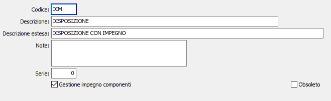

Causali disposizioni di produzione
Le causali disposizioni vengono utilizzate al momento dell’inserimento di una disposizione e ne determinano alcune caratteristiche.
E’ possibile gestire più causali di disposizioni, e più numerazioni progressive (serie). In funzione dei flags e dei parametri indicati, una causale di disposizione può attivare o meno l’aggiornamento dell'impegno in produzione.

CODICE: Codice alfanumerico di 3 caratteri, a libera scelta dell'utente, per individuare la causale attiva. Sul campo sono attive le funzioni di ricerca (F9) sulla tabella stessa.
DESCRIZIONE: Campo alfanumerico di 30 caratteri per inserire la descrizione della causale attiva.
DESCRIZIONE ESTESA: Campo alfanumerico di 60 caratteri per inserire la descrizione estera della causale attiva ad uso interno dell’utente.
NOTE: Campo note a disposizione dell’utente.
SERIE: Campo numerico per inserire il numero di serie del documento. Ciascuna serie attiva una propria numerazione di documenti. E’ necessario, in fase di immissione del documento, per proporre automaticamente e correttamente il numero progressivo del documento acquisito dalla tabella protocolli.
GESTIONE IMPEGNO COMPONENTI: Flag per abilitare la gestione dell’impegno dei componenti. La presenza della spunta determina l’aggiornamento dell’impegnato dei componenti in fase di impegno disposizioni.